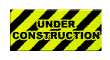
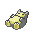

Contact




I'm an aspiring software developer who enjoys building cool stuff for my friends and family, and learning new things.
I have a Bachelor of Science in Computer Science and am currently seeking employment in the scope of software development.
I've been programming for about 4 years since early 2021, and I work at the intersection of art and computer
science. Some of my interests include game development, 3D modeling and low-level systems. Recently, I've been
interested in building pcs and Linux. I like music, art, video games, foreign languages, cooking and anime.
[Now]: here is what I'm up to nowadays
[Uses]: here is what I usually use throughout my day
The technology and equipment I use daily
